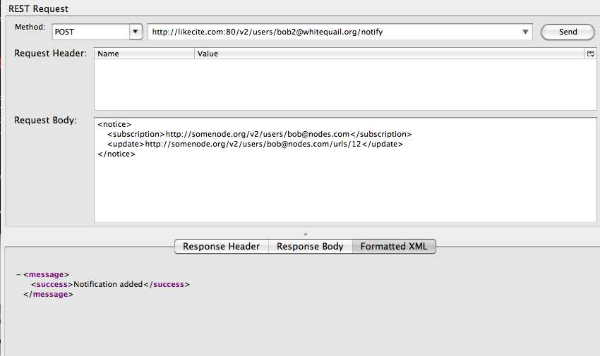
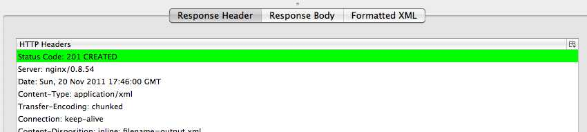
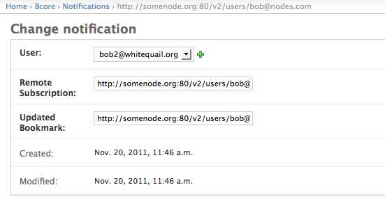

This endpoint is typcially sent to other webservices to be used as a callback url. This webservice will call other nodes callback urls whenever the Bookmark model is modified. This endpoint validates urser input via a RelaxNG schema and url parsing functions.
Usage Example:


